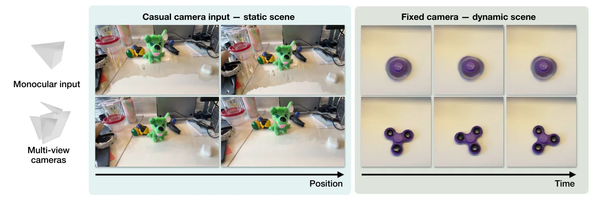
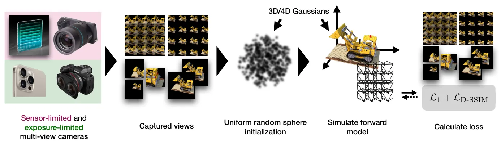
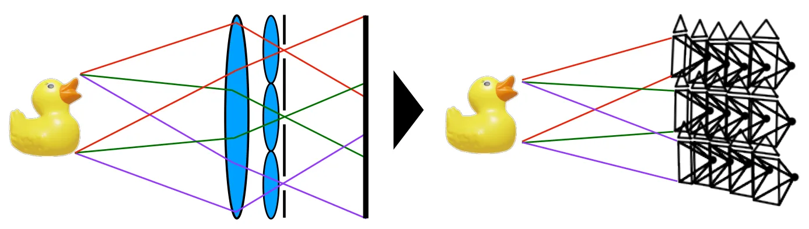
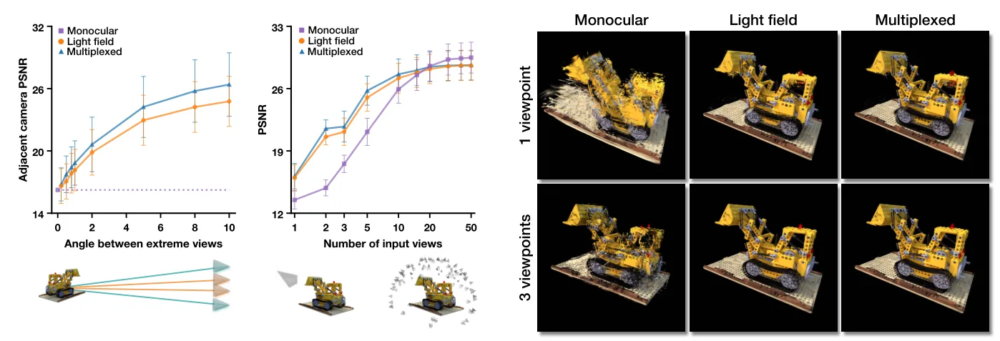

稀疏光场采样提升随手式 3D/4D 重建Sparse Light Field Sampling Improves Casual 3D and 4D Reconstruction
提供新数据集并系统分析稀疏多视点对 3D/4D 重建的影响，覆盖传感器设计与重建质量。
一句话工作总结
从采集端说明多视点角度覆盖对 3D/4DGS 重建的价值，尤其适合关注低成本多相机、动态场景和少曝光重建的读者。
摘要
论文研究传感器受限的多视点采集：单个传感器在空间分辨率与角度分辨率之间权衡，或多个传感器同步观测同一曝光事件。作者构建包含三类消费级多视点相机的新数据集，并评估稀疏视图 3DGS/4DGS，结果显示即使基线较小，多相机角度采样也能显著改善单帧、少帧和动态场景重建。
Many consumer smartphones, stereo cameras, and light field cameras record multiple synchronized viewpoints in a single exposure event. However, novel view synthesis pipelines commonly use only a monocular stream and rely on camera motion or learned priors to obtain angular coverage. In this paper, we ask: why do we use only one viewpoint? We analyze sensor-limited multi-view, where one sensor trades off spatial and angular resolution, and exposure-limited multi-view, where multiple sensors on one commodity device observe each event simultaneously. We introduce a new dataset incorporating three types of commodity multi-view cameras, and evaluate sparse-view 3DGS and 4DGS baselines measuring reconstruction quality as a function of number of exposures and angle between extreme views. Our results demonstrate that using multiple cameras, even with a low baseline, significantly improves reconstruction quality in single-shot, few-shot, and casual video settings. In addition, under a fixed sensor budget, angular sampling improves reconstruction when exposures are scarce despite lower spatial resolution. The gains are most pronounced for single-shot and dynamic scenes, where a stationary monocular camera lacks the angular diversity to recover scene geometry and motion.
中文解读摘录
- 中文名：TopoSurfel：连接高斯曲面元与网格的闭环表面重建
- 方向：3DGS、表面重建、网格、可微几何；代码链接见论文页。
- 要点：以不可训练的可微等值面提取构造连续代理网格，再用网格引导曲面元演化，结合法线对齐和几何感知密度控制抑制漂浮点、填补孔洞，并以空间感知混合重初始化增强大场景稳定性。
- 判断：今日与三维重建主线最直接相关，值得优先阅读其网格提取、优化稳定性和复杂场景实验。
图表/页面预览
{kind=link}

{kind=link}

{kind=link}

{kind=link}
